Har savolda tavsiya qilingan variant ajratib ko'rsatilgan. Javob uchun «hammasi A» yoki «144 B, qolgani A» deb yozish kifoya. Faqat ma'lumot uchun bo'limlar (javob kerak emas) uzuq chiziqli ramkada.
Hozir to'g'ri bo'lak tanlansa, tugma faqat rangini o'zgartiradi, maydonda esa matn shunchaki paydo bo'ladi. Ko'z bo'lak qayerga ketganini kuzatolmaydi.
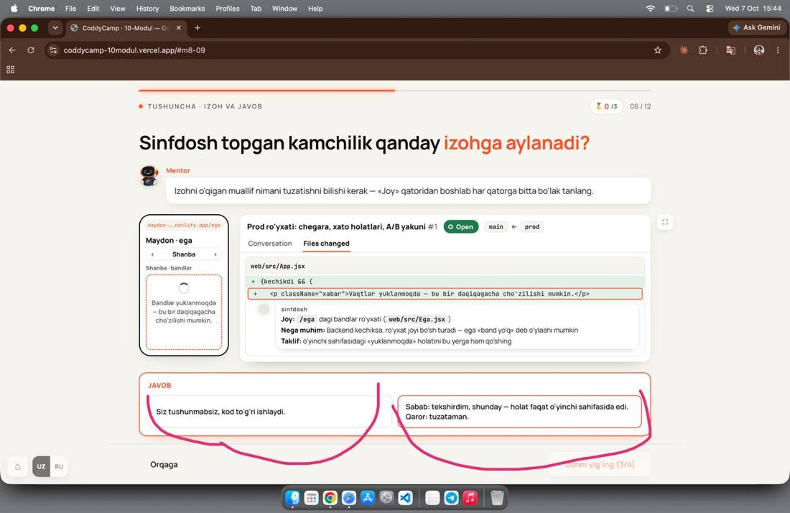
Siz ko'rgan sayt 07.10 dagi eski versiya. Lokal versiyada tungi Z1 ⛶ ni telefonning yoniga qo'ygan. Siz esa uni butun oq kartaning yuqori o'ng burchagiga tortib chizgansiz.
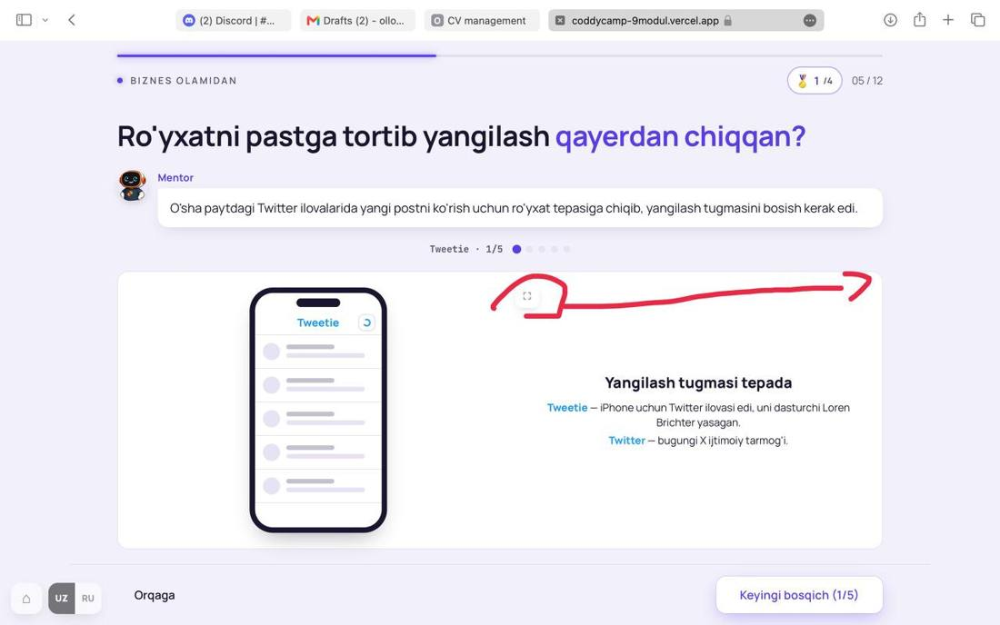
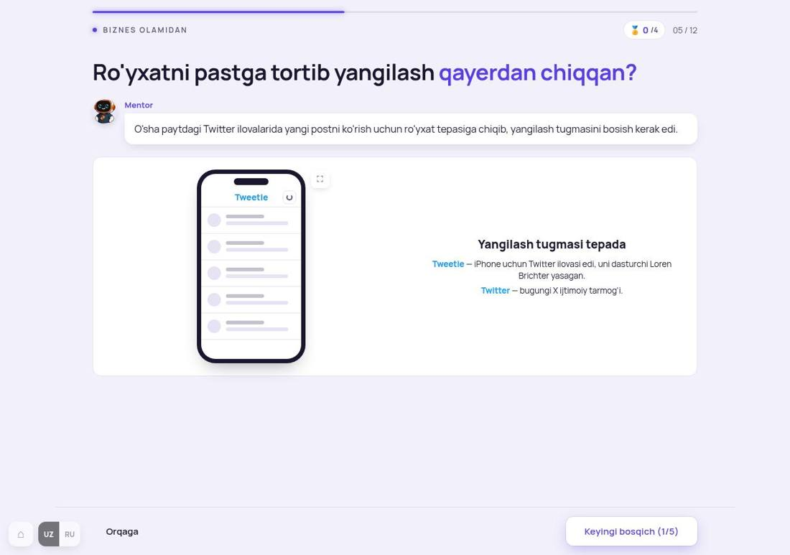
Bu 127-fidbek bilan bir xil. ⛶ ning joyi tunda tuzatildi. Karta pastga cho'zilib qolishining sababi qolipdagi .q-split: ikki ustun bo'yi bo'yicha bir xil cho'ziladi. Buni Z2 tuzatadi. Z2 qolip fayliga tegadi, ya'ni boshqa seans ishlayotgan 1–6-M praktika darslariga ham.
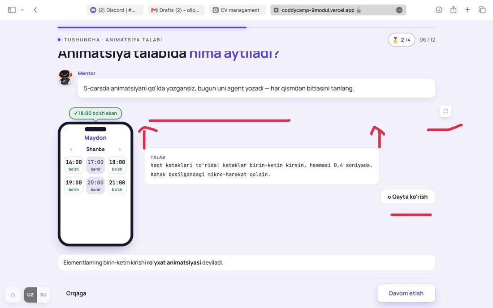
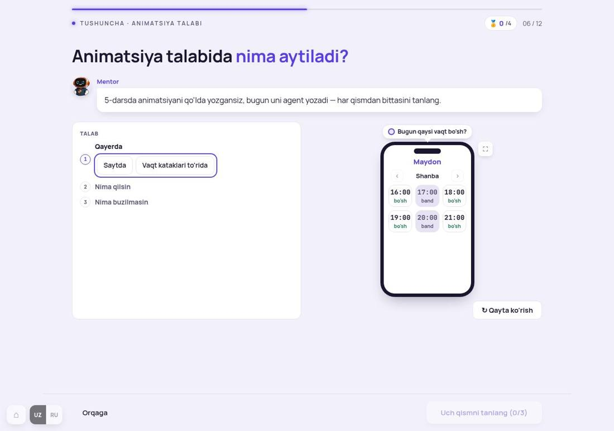
.q-split ustunlari tepadan tekislanadi. Oldin va keyin .q-split ishlatilgan barcha ekranlar (1–6-M ham) o'lchanadi. Biror ekranda yomonlashsa, o'sha ekranga alohida tuzatish qilinadi. Nazorat seansiga jurnal orqali xabar beriladi.«Ortda qoldingizmi — faqat mentor bilan» va undagi git fetch … buyruqlari 45 darsda bor. Ular ichida GitHub'dagi Maydon repo'si teglariga murojaat bor (153 ga qarang). m8-06 da yana ikki ortiqcha gap bor: «Har gap kodda bor…» va «Render va Netlify — sizniki…».
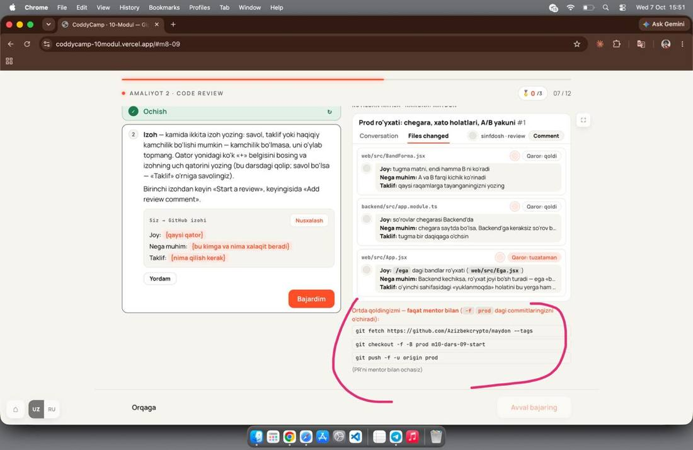
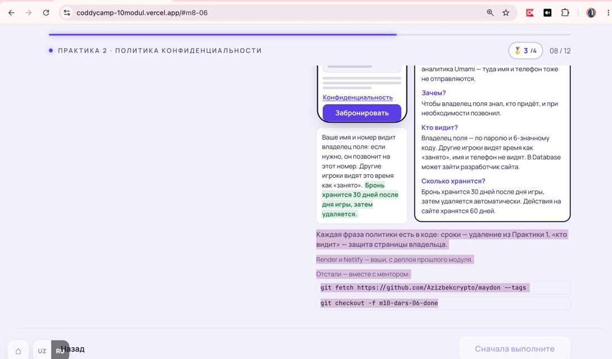
Hozir uchala qatorga istalgan narsani yozish mumkin, tekshiruv yo'q. «Nusxalash» A3 qadamida kerak, chunki matn Antigravity'ga yuboriladi. Ammo «O'z g'oyangiz» qadamida matn hech qayerga ketmaydi, shuning uchun tugma ortiqcha.
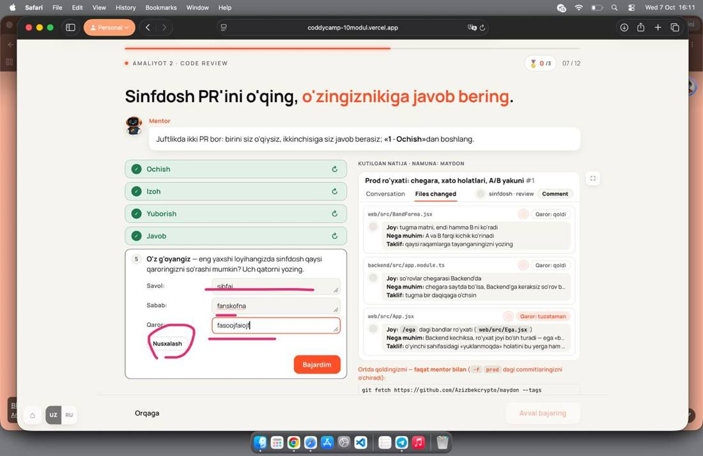
Bu belgi qolipdagi QYakun komponentida. U hamma darslarda bir xil, qizg'ish rangda.
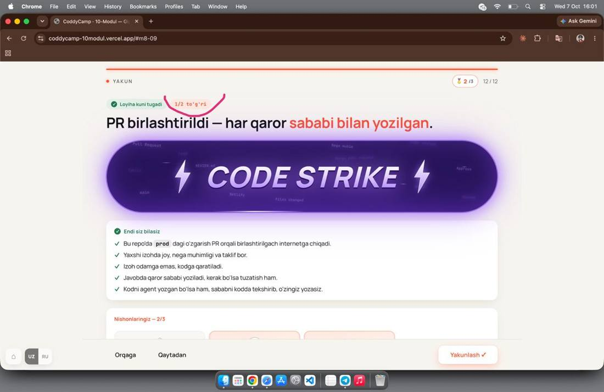
Hisob shunday: darsda 2 ta test bor (1-savol va 2-savol). Faqat birinchi urinishda to'g'ri berilgan javob sanaladi. Xato qilib, keyin to'g'risini topsangiz, u sanalmaydi. CODE STRIKE o'yini bu hisobga kirmaydi. Kodda xato ko'rinmadi. Ikkala testni birinchi urinishda to'g'ri yechib, 2/2 chiqishini avtomat sinovda tasdiqlayman.
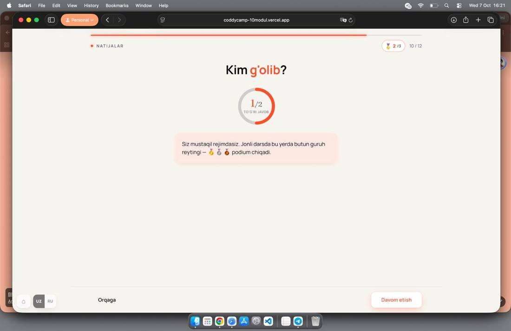
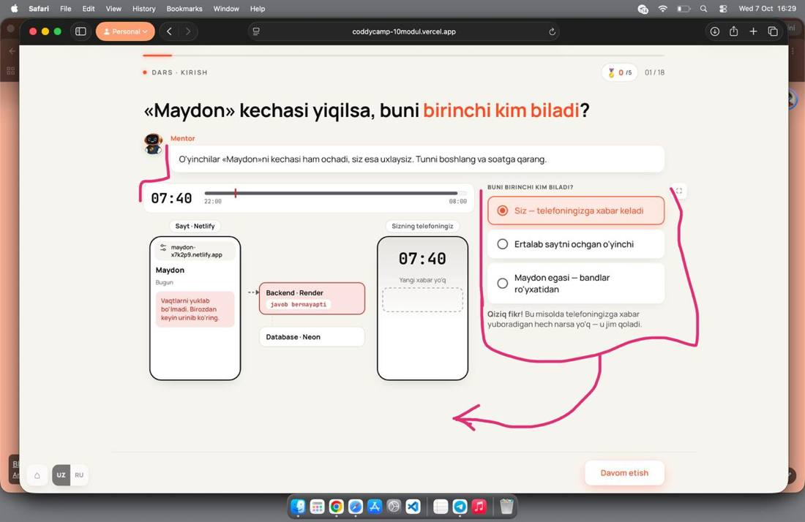
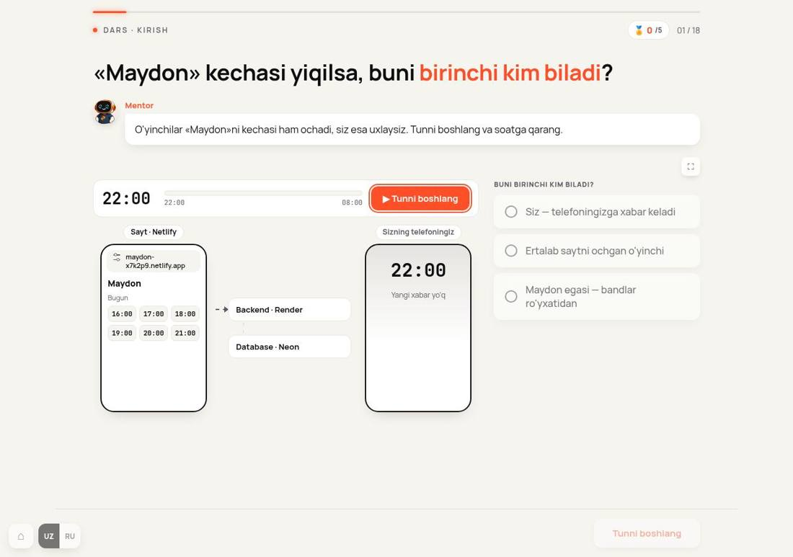
Hozir darslarda umuman ovoz yo'q. 19.09 da «ovoz kerak emas» degan qaror qabul qilingan edi. U Mentorning gapini o'qib beradigan ovoz haqida edi. Bosish va to'g'ri javob ovozlari haqida qaror bo'lmagan.
«Maydon» — o'quvchilar 9–14-modullarda quradigan saytning nomi, xuddi «Netlify» yoki «Telegram» kabi. Sayt shapkasida ham «Maydon» deb yozilgan. Shuning uchun RU'da ham o'zgarmaydi: o'quvchi ekranda va o'z saytida bitta nomni ko'radi. Qo'shtirnoqdagi boshqa so'zlar (tugma nomlari va hokazo) tarjima qilinadi.
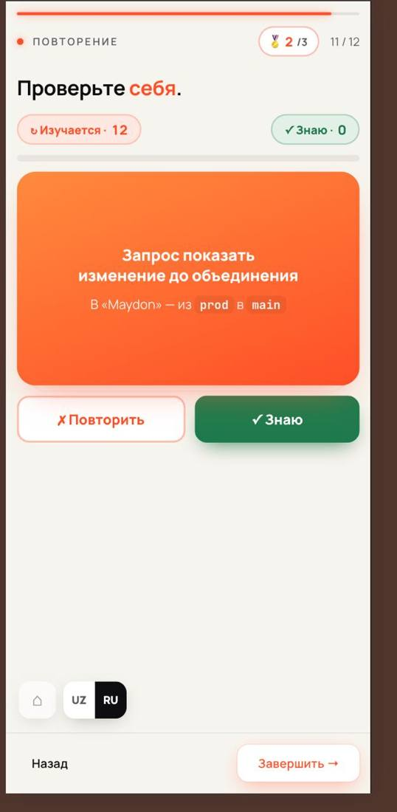
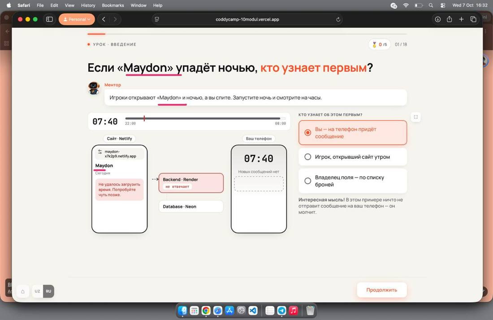
151: RU so'zlari uzunroq (masalan «Забронировали»), shuning uchun ustunga sig'maydi. 152: «сейчас / к концу месяца» maydonlari oddiy matn maydoni (type="text"), sana turi emas. Ichiga «10.10.2…» kabi har narsa yozish mumkin, uzun bo'lsa «…» bilan kesiladi.
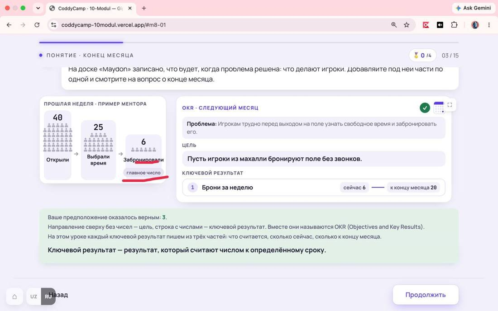
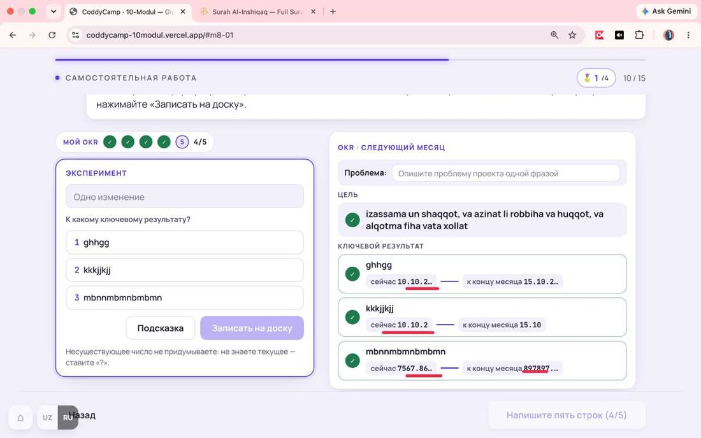
% yoki «?» yoziladi, eng ko'pi 6 belgi. Yozilgan qiymat to'liq ko'rinadi, «…» bilan kesilmaydi.github.com/Azizbekcrypto/maydon hozir 404 qaytaradi: repo yopiq yoki umuman yo'q. Unda o'qish materiali ham yo'q, darslarda faqat git fetch uchun ishlatiladi. Lokal ~/Desktop/maydon da faqat 9-Modul bor (teglar dars-04…dars-11, NestJS + React). Darslar esa 10–14-modullar uchun yana ~70 ta teg (m10-dars-02-start … m14-dars-09-done) va 7 ta 9-Modul tegini so'raydi.
Savol A, repo: o'quvchi git fetch qila olishi uchun repo ochiq (public) bo'lishi shart. Yopiq repo'dan o'quvchi kodni ololmaydi. Tavsiya: ochiq repo.
Savol B, .env: tavsiya — repo'da faqat .env.example bo'ladi, unga tayyor lokal qiymatlar yoziladi (localhost baza, namuna parol, test kalitlar), README'da qadam-baqadam yo'riqnoma. Haqiqiy .env yuklanmaydi. Haqiqiy Neon yoki to'lov kaliti ochiq repo'ga tushsa, istalgan odam bazani o'chirib yuborishi mumkin. Agar baribir haqiqiy .env kerak bo'lsa, faqat bepul, alohida, «o'chsa ham zarari yo'q» hisoblar bilan.
Savol C, qanday quriladi: har dars ekranidagi «kutilgan natija»ni o'qib, kod dars ketidan dars yoziladi va har dars uchun start/done tegi qo'yiladi. Har bosqich lokalda ishga tushirib tekshiriladi. Teglar bir-biriga ulanib ketgani uchun ish ketma-ket boradi. Tavsiya: men o'zim plyus bir vaqtda bitta yordamchi agent, modul-modul bilan, jami 5 navbat (10–14-M). Tokeni ko'p ketadi, lekin ishonchli. Push qilinmaydi: ertalab siz repo ochasiz va yuklaysiz.
Bu GitHub ko'rinishidagi namuna: ismsiz avatar doirasi, «Conversation» yorlig'i. Bosilmaydi, bosilishi ham kerak emas. Siz yozgandek, hammasi joyida.
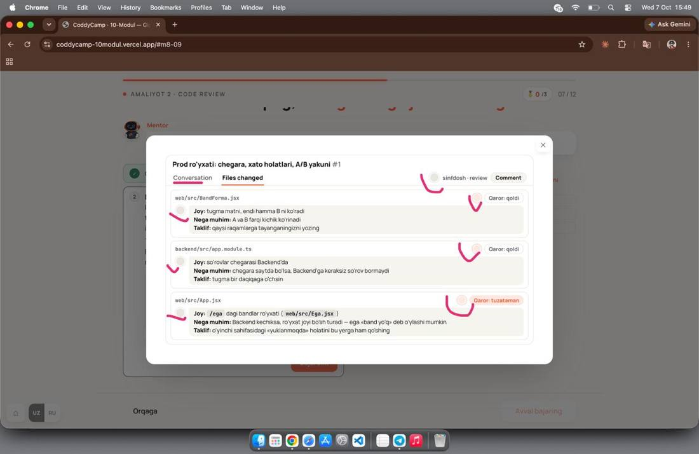
To'g'ri, m7-08 oddiy dars, unda uyga vazifa bor. «Loyiha kuni» darslarida (masalan m8-09) uyga vazifa yo'q, chunki ish repo'da qilinadi. Bu 207.4-qonun, 132-savolga ham shunday javob bergan edim.
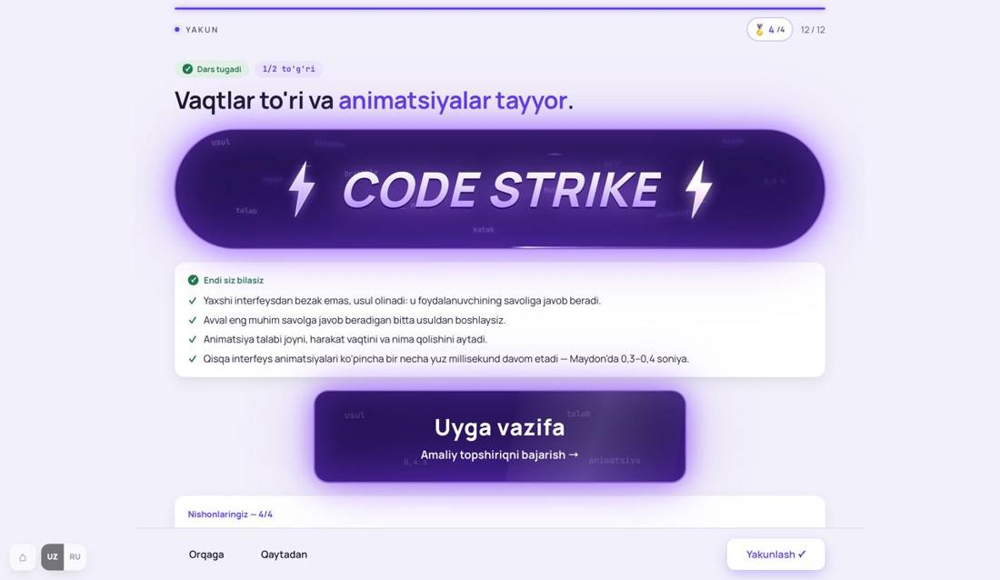